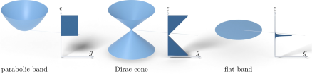

Advanced Quantum Materials 2027 · All lectures · Lecture notes
Session 2. Symmetries, Tight-Binding Band Structure Theory, and Effective Models
2.9 Properties of an electronic dispersion
Once we have a dispersion \(E(\mathbf{k})\), from (2.8), (2.13), (2.14) or from a more complicated model, several quantities that we derive from it have a direct physical meaning.
The density of states,
\[g(\omega) = \int_{\text{BZ}} \frac{d^dk}{(2\pi)^d}\; \delta\!\left(\omega-E(\mathbf{k})\right), \tag{2.16}\]
counts how many states there are at energy \(\omega\). It controls how strongly a material responds to interactions. A large or divergent density of states means that even a weak interaction can drive an instability toward magnetism, a charge density wave or superconductivity, which are the three cases of the last session. A vanishing density of states means that interactions can hardly have any effect, however strong they are.
The group velocity,
\[v(\mathbf{k}) = \frac{1}{\hbar}\nabla_{\mathbf{k}} E(\mathbf{k}), \tag{2.17}\]
is the local slope of the dispersion. Where \(v(\mathbf{k})=0\), electrons at that \(\mathbf{k}\) do not move in practice. Where \(v(\mathbf{k})\) is large, they propagate quickly through the lattice.
The effective mass,
\[\left(\frac{1}{m^\ast}\right)_{ij} = \frac{1}{\hbar^2}\, \frac{\partial^2 E(\mathbf{k})}{\partial k_i\,\partial k_j}, \tag{2.18}\]
is the curvature of the dispersion, and it is the mass that is measured in essentially every transport or cyclotron-resonance experiment, since the bare electron mass cannot be observed directly inside a solid. Depending on the band, \(m^\ast\) can go from nearly zero to very large values. For a Dirac dispersion, as we will see soon, it is formally not defined at the point where the bands touch.
Finally, the Fermi surface is the set of \(\mathbf{k}\)-points that have the same energy as the highest occupied state. Its shape controls which electronic instabilities are favoured and how a material responds to an external magnetic field, and it is one of the quantities that ARPES (Section 2.12) can map directly.
For the band \(\epsilon_\varphi=-2t\cos\varphi\), where is the group velocity largest?
Show the answer
The correct option is B.
The velocity is the slope of the band, which is proportional to \(2t\sin\varphi\). It vanishes at the band edges and it is largest in the middle of the band, at \(\pm\pi/2\).
Notebook check-in: session2.ipynb, “Density of states of the honeycomb lattice” (Core), and “Fermi surface of the honeycomb lattice” (Challenge)
Once you have the honeycomb dispersion of Section 2.11, these two sections let you compute (2.16) and the Fermi surface directly, and see how both change when the Fermi level is tuned through the Dirac point.
Try it. Run the cell and find the V shape at zero energy and the two sharp peaks. Uncomment the triangular lattice and check that the dip at zero energy is gone.
2.10 Three types of dispersion, which are parabolic, Dirac and flat
Real dispersions are complicated functions of \(\mathbf{k}\), but almost every band structure in this course is built locally from three limiting types.
Parabolic bands, \(E\propto k^2\), which is the case similar to free electrons, describe most semiconductors and conventional metals. They appear essentially from a Taylor expansion near any extremum of a band. We already saw this explicitly near \(\varphi=0\) and \(\varphi=\pi\) in (2.8), with effective masses of opposite sign at the two extrema.
Dirac (linear) dispersions, \(E\propto|k|\), are realized in graphene and in several topological materials, such as quantum spin Hall insulators, Chern insulators and other symmetry-protected topological phases. They have finite topological invariants, in the form of a Berry phase, and they give rise to a phenomenology that is similar to relativistic physics, even though the electrons themselves are not relativistic at all.
Flat bands, \(E(\mathbf{k})=\text{const}\), may look like the least interesting case, but by (2.16) a flat band gives a divergent density of states. As a result, even weak interactions have a very large effect when a flat band is near the Fermi level. When the flatness has a nontrivial origin, which is destructive interference in real space and not a hopping set to zero, the flat band can also have a finite Chern number, which is central to the quantum Hall effect and to moiré materials.
Figure 2.4 shows the three types next to each other, together with the density of states of each one, which decides whether interactions can have an effect on them.

A two-dimensional Dirac cone has \(E=\hbar v_F|\mathbf q|\). How does the density of states behave close to the tip?
Show the answer
The correct option is B.
In two dimensions the number of states in a ring of radius \(q\) grows as \(q\,dq\). With \(E\propto q\) this gives a density of states proportional to \(|E|\), which vanishes at the tip.
Next we derive the Dirac case explicitly, since it is the defining feature of graphene and the direct link to the topology lecture, and then we look at two lattices that realize flat bands. The tools we use in the whole course to compute such dispersions are pyqula, which we named in Section 2.5, and its graphical companion, which is a second computational tool shown on the slides with the name Quantum Lattice. It needs no scripting, and it is not named in the lecture, which only refers to “a user interface we will use at some points”.